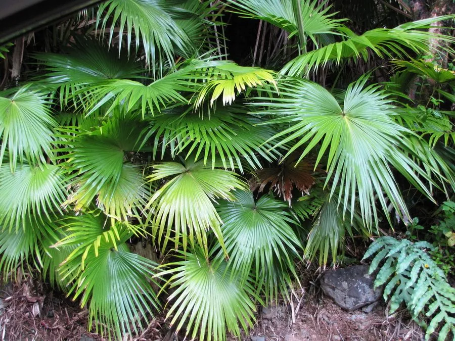

乔木 · 植物界
蒲葵 Livistona chinensis

中国南方常见的常绿乔木，叶片大如圆扇、深裂呈掌状，可制蒲扇，是岭南地区重要的传统经济与观赏树种。
- 分类
- 门被子植物门纲百合纲目棕榈目科棕榈科属蒲葵属
- 栖息环境
- 海拔 500 米以下的热带亚热带地区，喜高温多湿、光照充足
- 地理分布
- 中国广东、广西、福建、海南、台湾等地，日本也有分布
- 保护级别
- 暂无评估；中国未列入国家重点保护野生植物名录
物种志
蒲葵为常绿乔木，高可达 20 m，树干通直、不分枝，表面有环状叶痕；叶片大，直径可达 1 m，掌状深裂至叶片中部以下，裂片先端下垂，叶柄长、两侧具刺。花期 3–4 月，肉穗花序腋生，花小、黄绿色；核果椭圆形，成熟时蓝黑色，被白粉。
蒲葵原产中国南部及日本，广东、广西、福建、海南、台湾等地常见，喜高温多湿、光照充足，适宜深厚肥沃、排水良好的土壤。叶片宽大、纤维坚韧，是制作蒲扇的传统材料，广东新会蒲葵扇远近闻名；叶片还可制蓑衣与包装材料，叶柄可制牙签，木材可制器具。蒲葵树形高大、叶形如扇，是南方园林、道路与庭院中常见的观赏树种。
形态与习性
- 株高可达 20 m，树干有环状叶痕
- 叶掌状深裂，直径可达 1 m
- 花期3–4 月，肉穗花序腋生
- 果期10–12 月，核果蓝黑色
- 光照喜光，不耐长期荫蔽
- 水分喜湿润，怕积水
- 主要用途制蒲扇与蓑衣、园林观赏、木材制器具
趣味知识
- 蒲葵的叶片宽大如圆扇，撕去叶肉后就是传统蒲扇的原料。
- 广东新会的蒲葵扇制作技艺历史悠久，是当地著名的传统手工艺。
- 蒲葵的叶柄长而坚韧，两侧有刺，采叶时需要小心。
- 蒲葵树形高大、叶片如扇，是南方园林中常见的观赏棕榈。